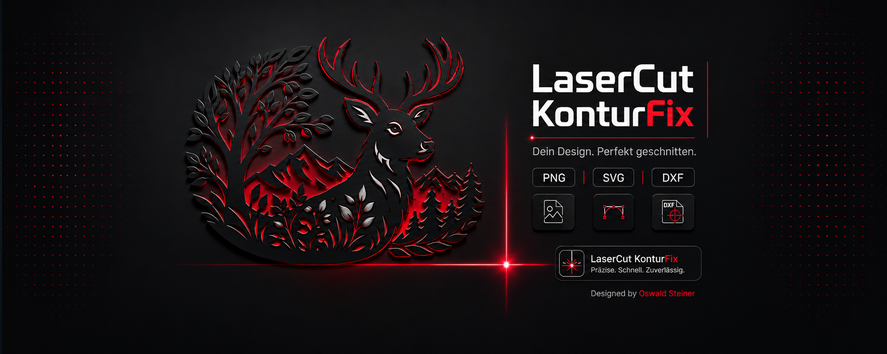

Bild laden
Load image
PNG, JPG oder JPEG importieren und direkt im linken Fenster prüfen.
Import PNG, JPG, or JPEG and inspect it in the left preview.
Eine Windows-App für saubere Lasercutter-Konturen: Bild laden, Schwarz-Weiß-Maske erzeugen, getrennte Flächen verbinden und als PNG, SVG oder DXF ausgeben.
A Windows app for clean laser-cutter contours: load an image, create a black-and-white mask, connect separated islands, then export as PNG, SVG, or DXF.
Der Ablauf ist auf praktische Lasercutter-Dateien ausgelegt: erst sauber maskieren, dann Inseln verbinden, anschließend als rote 0,2-mm-Schnittlinie exportieren.
The workflow is built for practical laser-cutter files: create a clean mask, connect islands, then export with red 0.2 mm cut lines.
PNG, JPG oder JPEG importieren und direkt im linken Fenster prüfen.
Import PNG, JPG, or JPEG and inspect it in the left preview.
Schwelle, Glättung und kleine Details werden einstellbar vorbereitet.
Threshold, pre-smoothing, and small detail cleanup are adjustable.
Getrennte schwarze Bereiche können mit Brücken verbunden werden.
Separated black regions can be connected with structural bridges.
PNG, SVG und DXF für die Weiterverarbeitung speichern.
Save PNG, SVG, and DXF for further processing.
LaserCut KonturFix bleibt bewusst kompakt: zwei Vorschaufenster, klare Regler und Exportformate, die in typischen Lasercutter-Workflows weiterverwendet werden können.
LaserCut KonturFix stays deliberately compact: two preview panes, clear controls, and export formats that fit common laser-cutting workflows.
Links das geladene Bild, rechts die vorberechnete SVG-Kontur.
Loaded image on the left, prepared SVG contour on the right.
Änderungen an Glättung und SVG-Parametern werden nach kurzer Pause neu berechnet.
Smoothing and SVG parameter changes recalculate after a short pause.
SVG-Dateien werden mit roten Konturen und 0,2 mm Linienbreite gespeichert.
SVG files are saved with red contours and 0.2 mm line width.
Zusätzlich zum SVG kann das Ergebnis als DXF gespeichert werden.
In addition to SVG, the result can be saved as DXF.
Schaltflächen, Eingaben und Regler erklären sich nach kurzem Verweilen mit der Maus.
Buttons, inputs, and sliders explain themselves after hovering briefly.
Die Anwendung läuft als eigenständige EXE und nicht im Browser.
The application runs as a standalone EXE, not in the browser.

Die App konzentriert sich auf genau den Bereich, der vor dem Schneiden oft Zeit kostet: getrennte schwarze Flächen erkennen, mit Brücken verbinden und die Kontur so glätten, dass sie nicht wie ein Pixelbild wirkt.
The app focuses on the part that often takes time before cutting: detecting separated black areas, connecting them with bridges, and smoothing the contour so it does not look pixel-stepped.
Beide Windows-Versionen liegen im GitHub-Release. Wähle einfach Deutsch oder Englisch.
Both Windows versions are available in the GitHub release. Choose German or English.
Deutsche Oberfläche, deutsche Tooltips und deutscher Supportdialog.
German interface, German tooltips, and German support dialog.
Deutsch herunterladen Download German versionEnglische Oberfläche für internationale Nutzer und GitHub-Besucher.
English interface for international users and GitHub visitors.
Englisch herunterladen Download English versionWenn dir LaserCut KonturFix hilft, kannst du die Weiterentwicklung unterstützen oder Feedback und Wünsche schicken.
If LaserCut KonturFix helps you, you can support further development or send feedback and feature requests.
Jede Unterstützung hilft dabei, die App weiter zu verbessern und neue Funktionen sauber umzusetzen.
Every contribution helps improve the app and add new features carefully.
Melde Probleme oder Verbesserungsvorschläge direkt über GitHub oder per E-Mail.
Report issues or improvement ideas directly through GitHub or by email.